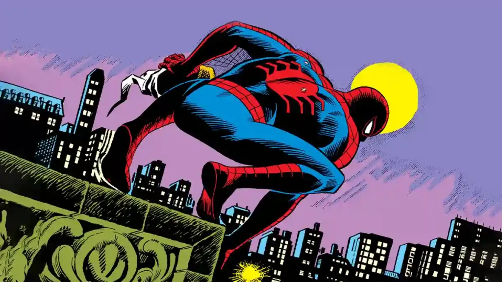

Hijo de espías de la CIA fallecidos en un sabotaje aéreo, Peter fue criado en Queens por sus tíos Ben y May en un entorno de amor y modestia. Creció como un niño brillante pero solitario, sufriendo acoso escolar debido a su timidez y físico frágil antes de la picadura. Años después, ya como héroe, logró limpiar el nombre de sus padres al demostrar que no fueron traidores, sino héroes nacionales.
inicio